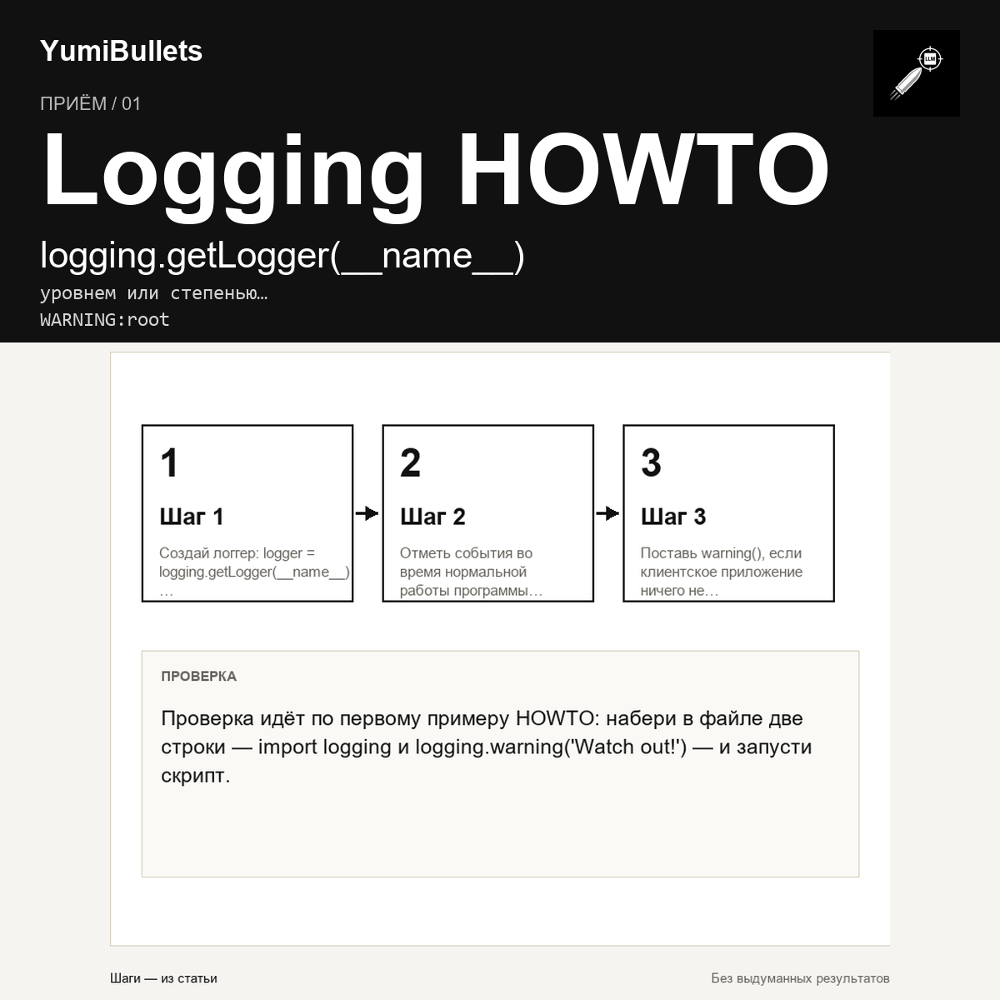

Разметка событий в Python: print, info(), warning() или исключение
Скрипт печатает всё через print(), библиотека молчит об ошибке, а исключение летит там, где хватило бы предупреждения. Дальше — рамка выбора из Logging HOWTO: чем отметить событие